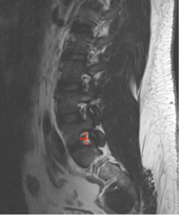

Adapted from: Feger J, Er A, Yap J, et al. Lumbar spine protocol (MRI). Reference article, Radiopaedia.org (Accessed on 01 Jan 2026) https://doi.org/10.53347/rID-147093
1) Description of Measurement
Lumbar foraminal height and width quantify the available space for the exiting nerve root within the neural foramen. Reduction in either dimension results in foraminal stenosis, most commonly due to disc height loss, facet hypertrophy, osteophytes, or spondylolisthesis, and is a major cause of radicular leg pain.
These measurements allow objective grading of foraminal stenosis as mild, moderate, or severe.
2) Instructions to Measure
3) Normal vs. Pathologic Ranges
Key points:
4) Important References
Lee S, Lee JW, Yeom JS, et al. A practical MRI grading system for lumbar foraminal stenosis. AJR Am J Roentgenol. 2010 Apr;194(4):1095-8. doi: 10.2214/AJR.09.2772.
Seo J, Lee JW. Magnetic Resonance Imaging Grading Systems for Central Canal and Neural Foraminal Stenoses of the Lumbar and Cervical Spines With a Focus on the Lee Grading System. Korean J Radiol. 2023 Mar;24(3):224-234. doi: 10.3348/kjr.2022.0351.
Park HJ, Kim SS, Han CH, Lee SY, Chung EC, Kim MS, Kwon HJ. The clinical correlation of a new practical MRI method for grading cervical neural foraminal stenosis based on oblique sagittal images. AJR Am J Roentgenol. 2014 Aug;203(2):412-7. doi: 10.2214/AJR.13.11647.
5) Other info....
Foraminal stenosis is best assessed on parasagittal MRI.
Should be evaluated together with:
Dynamic foraminal collapse may be underestimated in supine MRI; consider weight-bearing or extension MRI in equivocal cases.